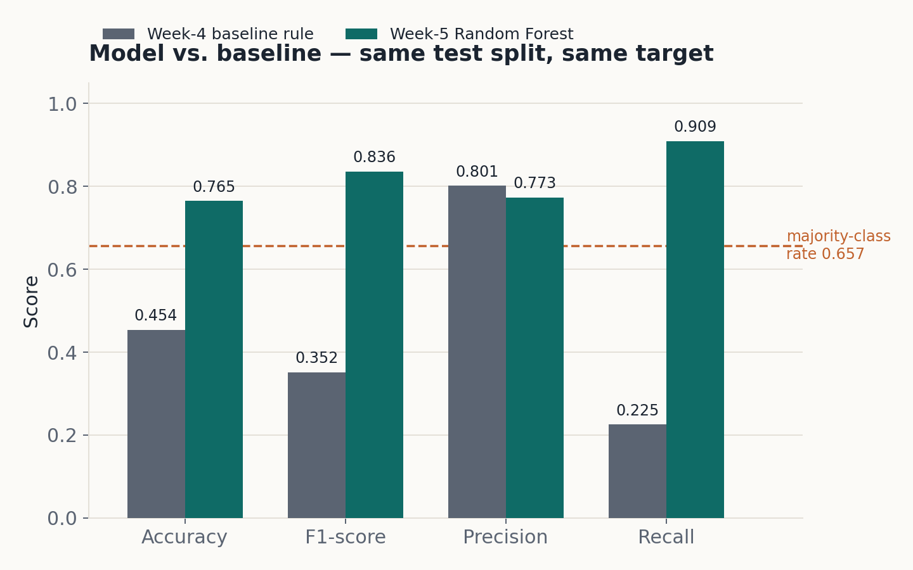
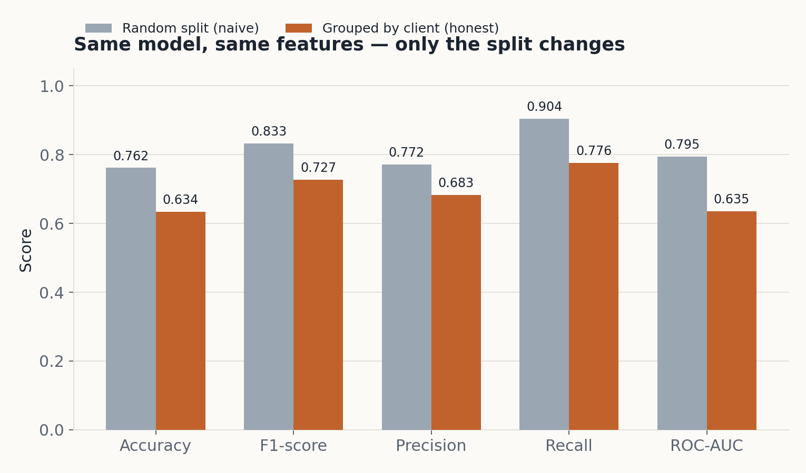
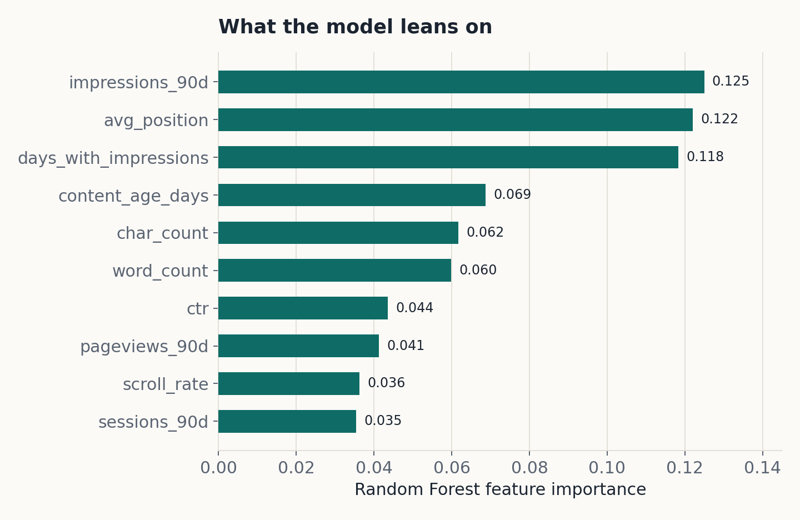
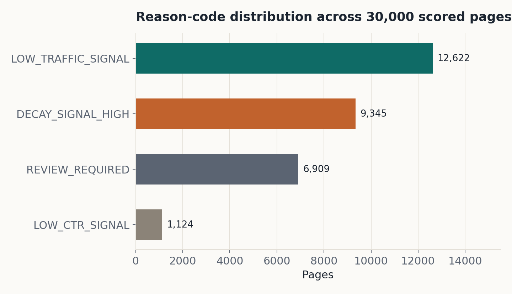

Abstract
Introduction & problem framing
A large content library decays unevenly. Some pages keep earning search visibility indefinitely; others quietly lose ground for months before anyone notices. An editorial team can't manually re-check every page on a fixed schedule, so the practical question isn't "is this page declining?" in isolation — it's "out of everything, what should we look at first?"
This is the real content problem behind FlyRank's Content Refresh work: an agency managing editorial calendars doesn't do it for one site, it does it across many client portfolios at once. The dataset behind this paper reflects that scale — 30,000 anonymized pages spanning 32 distinct client portfolios, not one large site. A fixed policy like "refresh anything older than a year" wastes review time on pages that are still performing, while a page quietly losing visibility on a different client's site can sit unreviewed for a full cycle. That scheduling problem, at portfolio scale, is the case study this paper works through.
Unit of analysis: one row is one content page. Output: a ranked queue, where each page carries a decline-probability score, a reason code explaining the likely driver, and a recommended action. Action a human takes: an editor works down the queue and reviews flagged pages against the stated reason — the model narrows the list, a person makes the call.
Cost of a wrong call: a false positive costs an editor's review time on a page that didn't need it; a false negative delays review of a page that did. Neither is severe in isolation, which is why this stays decision-support rather than an automated action.
Why ML helps here: whether a page is likely to keep declining depends on several interacting signals at once — staleness, traffic volume, search position, content length, engagement — rather than one clean threshold. A fixed rule can use one or two of these; a model can weigh all of them together and rank by relative risk.
Data
This work uses content_refresh_anonymized.csv, the safe starter
release for the Content Refresh lane: 30,000 rows, 44 columns. All
content_id and client_id values are pre-anonymized
hashes; no raw client names, URLs, or search queries appear anywhere in this
dataset or in the accompanying repository.
Deliberately excluded from the model's features
content_id,client_id— identifiers, not predictive signal (client_idis used only for grouping in the honest validation split, never as a feature)trend_direction,trend_pct— describe the outcome trend directly and would leak the label- The six 30-day window columns (
impressions_last_30d,clicks_last_30d,sessions_last_30dand their_prev_30dcounterparts) — these build the target; including them as features would let the model see the answer
days_since_last_update ≥ 90 AND
impressions_90d ≥ 1000) and included those same two columns as model
inputs. That version scored a perfect 1.0000 across every metric — not a good
result, but a deterministic function of its own inputs. It was discarded in favor
of the independent, forward-looking target used throughout this paper.
Methodology
Baseline
A transparent rule: flag a page "Review content" if
days_since_last_update ≥ 90 AND impressions_90d ≥
1000; otherwise "Monitor." Both signals were checked
against real data before being trusted — staleness and visibility were each split
into buckets and inspected with sample sizes, and both verdicts came back
CONFIRMED: neither is leaning on a signal that turned out to be
noise.
Target
decline_target = 1 when a page's impressions in the most recent
30-day window are lower than the prior 30-day window, else 0 — built only from
those two window columns, neither of which is a model feature.
Model
Random Forest Classifier (n_estimators=200,
random_state=42), chosen because the available signals are tabular
and mixed-scale, and their relationship to a decline in visibility is unlikely to
be linear — a tree ensemble captures interactions between features without
assuming a fixed functional form, and yields feature importances for
interpretation. Trained on 23 leak-checked features spanning content descriptors,
90-day traffic and engagement, and content metadata.
Validation design
Two splits, deliberately compared: an 80/20 random split stratified on the target
(the naive default), and a GroupShuffleSplit grouped by
client_id, 80/20, where no client appears in both train and test — 25
clients in training, 7 held out entirely, overlap confirmed to be zero. The
grouped split is the honest one: it measures generalization to a client the model
has never seen, the real deployment scenario.
Results
Model vs. baseline — same test split, same target
| Metric | Majority-class rate | Baseline rule | Random Forest | Improvement |
|---|---|---|---|---|
| Accuracy | 0.6572 | 0.4542 | 0.7647 | +0.3105 |
| F1-score | — | 0.3516 | 0.8355 | +0.4839 |
| Precision | — | 0.8014 | 0.7727 | −0.0288 |
| Recall | — | 0.2252 | 0.9095 | +0.6843 |
| ROC-AUC | — | — | 0.7952 | — |

Same model, same features — only the split changes
| Metric | Random split | Grouped by client | Change |
|---|---|---|---|
| Accuracy | 0.7617 | 0.6338 | −0.1279 |
| F1-score | 0.8329 | 0.7268 | −0.1062 |
| Precision | 0.7721 | 0.6835 | −0.0886 |
| Recall | 0.9041 | 0.7759 | −0.1282 |
| ROC-AUC | 0.7951 | 0.6351 | −0.1600 |

Errors
Of 6,000 test rows (random split), the model produced 1,412 misclassifications
(23.5% error rate) — 1,055 false positives and 357 false negatives, confusion
matrix [[1002, 1055], [357, 3586]]. The model over-flags more than it
under-flags, which fits its intended use: a false positive costs an editor a
look, a false negative costs a missed cycle.
Interpretation

A page's ongoing traffic pattern matters more to the prediction than how long the content is. These importances describe how the Random Forest split on the available features; they are not causal claims about what causes a decline.
Limitations
decline_targetis a rule-derived proxy for declining visibility, not a human-verified judgment that a page needs a refresh.- The client-grouped validation shows a real but modest generalization gap — ROC-AUC 0.795 on a random split versus 0.635 on unseen clients, only somewhat above chance.
- The production scoring pass used for ranking (Section 6) fits on all available rows, so its probability values are not calibrated confidence and skew high (median 0.87) — the ranking is the useful output, not the raw number.
- No causal claims are made anywhere in this work. All language is observed, measured, directional, or decision-support.
Ranked recommendations
The trained model scores all 30,000 pages for decline_probability and
ranks them highest-risk first. Each row carries a reason code explaining the
likely driver and a recommended action.
| Reason code | Pages | Meaning | Action |
|---|---|---|---|
| LOW_TRAFFIC_SIGNAL | 12,622 | Under 1,000 impressions in 90 days | Review search visibility / coverage |
| DECAY_SIGNAL_HIGH | 9,345 | Not updated in 91+ days | Review and refresh stale content |
| REVIEW_REQUIRED | 6,909 | No single dominant signal | Manual content review |
| LOW_CTR_SIGNAL | 1,124 | Click-through rate under 5% | Review title / result presentation |

How an editor uses this tomorrow: open the queue, start at rank 1, and work down as review capacity allows — the reason code says what to check first on each page, without needing to interpret a raw probability.
Monitoring / retrain triggers
Re-score monthly as new 90-day and 30-day windows roll forward. Retrain if the honest (grouped) ROC-AUC on a fresh held-out client sample drops further below the 0.635 baseline established here, or if the reason-code distribution shifts sharply from the proportions above — a signal that underlying traffic patterns have changed enough that the model's assumptions may no longer hold.
Reproducibility
To re-run this work from a fresh clone:
Then run, in order: work/notebooks/w04_baseline_score.ipynb,
work/notebooks/w05_model.ipynb,
work/notebooks/w06_validation_audit.ipynb,
work/notebooks/w07_action_playbook.ipynb, and
work/notebooks/capstone.ipynb.
random_state=42 throughout, for both train_test_split
and GroupShuffleSplit, and for RandomForestClassifier.
Environment: pandas==2.2.3, scikit-learn==1.6.1 (see
requirements.txt for the full pinned list).
The client-grouped test set (7 clients, held out via GroupShuffleSplit
with random_state=42) was evaluated once; the cell that builds this
split lives in work/notebooks/w06_validation_audit.ipynb, with output
metrics printed directly in that notebook's committed, executed output — checkable
from the repository, not taken on faith. Full source, notebooks, and the
supporting work/capstone_report.md are in the linked repository.